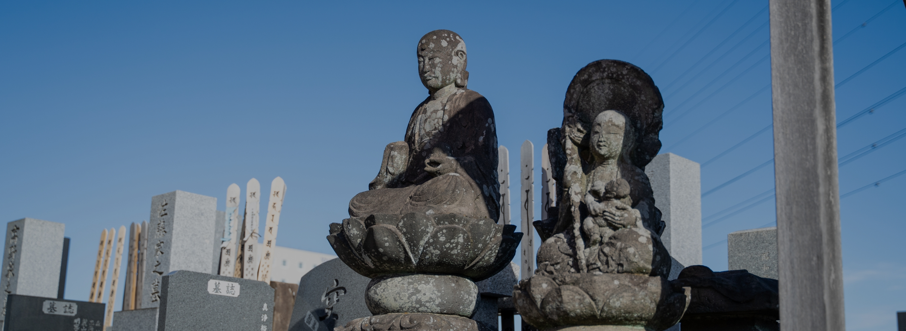

改装について
田舎の墓終いにお困りの方お手続き等も全て代行します
お墓の引っ越しとお骨の引っ越しには煩雑な改葬のお手続きが必要となります。
そちらのお手続き等も全て代行いたします。
-
証明書を入手する。
改葬するためには、新しく受け入れをしてもらう墓地・霊園等の管理者から、すでに墓地を確保したという証明書＜受け入れ証明書＞を発行してもらう。
-
改葬許可申請書を発行してもらう。
＜受け入れ証明書＞を持参し、菩提寺のある市区町村役場へ行き、＜改葬許可申請書＞を発行してもらう。
（1体に1通） -
申請書に捺印してもらう。
＜改葬許可申請書＞に死亡者の氏名･死亡年月日等を記入し、現在埋葬している墓地の管理者（菩提寺の住職等）に捺印してもらう。
-
市区町村役場に提出。
捺印された＜改葬許可申請書＞を菩提寺のある市区町村役場に提出し＜改葬許可証＞を発行してもらう。
-
閉眼供養をする。
墓前にて菩提寺の住職に｢閉眼供養｣（お墓から魂を抜く供養）をしてもらう。
-
石材店に依頼する。
遺骨をお墓より取り出す。
-
改葬許可証を提出する。
新しく入る墓地･霊園の管理者に＜改葬許可証＞を提出する。
-
開眼供養をする。
新しく入る墓前にて｢開眼供養｣（お墓に魂を入れる供養）をしてもらい、納骨する。